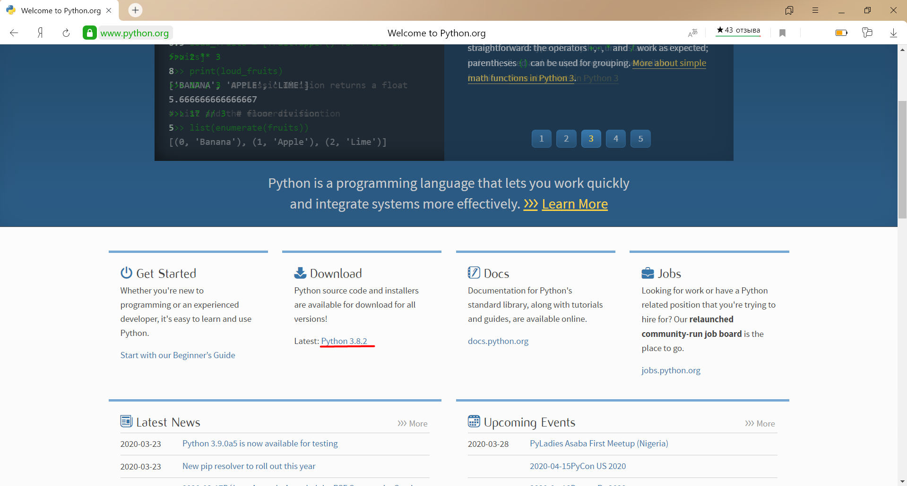
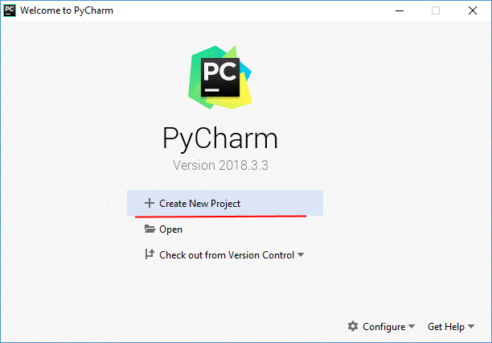
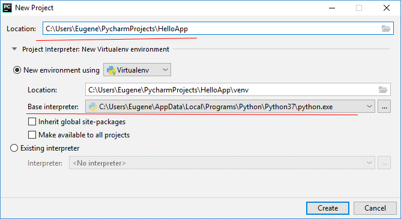
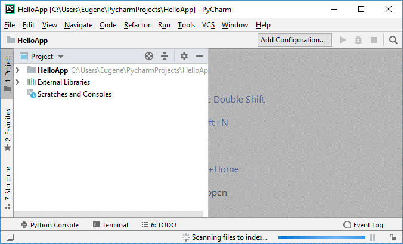
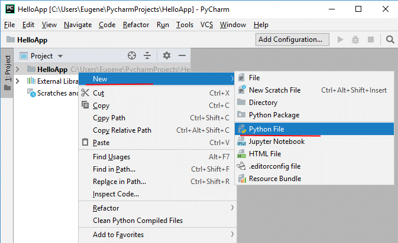
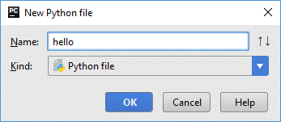
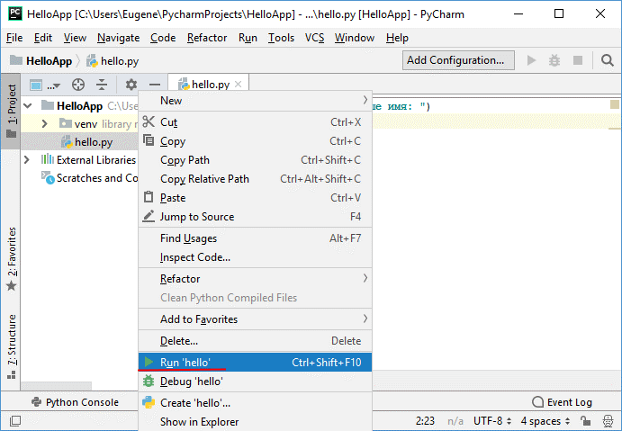
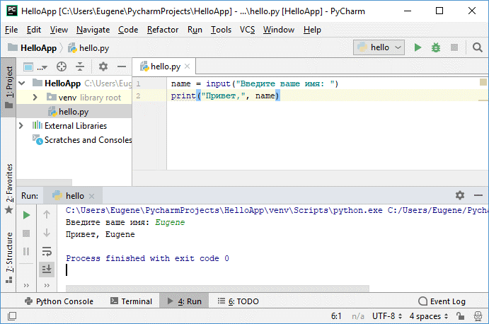

Python представляет популярный высокоуровневый язык программирования, который предназначен для создания приложений различных типов. Это и веб-приложения, и игры, и настольные программы, и работа с базами данных. Довольно большое распространение питон получил в области машинного обучения и исследований искусственного интеллекта.
Впервые язык Python был анонсирован в 1991 году голландским разработчиком Гвидо Ван Россумом. С тех пор данный язык проделал большой путь развития. В 2000 году была издана версия 2.0, а в 2008 году - версия 3.0. Несмотря на вроде такие большие промежутки между версиями постоянно выходят подверсии.
Python - очень простой язык программирования, он имеет лаконичный и в то же время довольно простой и понятный синтаксис. Соответственно его легко изучать, и, собственно, это одна из причин, по которой он является одним из самых популярных языков программирования именно для обучения. В частности, в 2014 году он был признан самым популярным языком программирования для обучения в США.
Python также популярен не только в сфере обучения, но в написании конкретных программ в том числе коммерческого характера. В немалой степени поэтому для этого языка написано множество библиотек, которые мы можем использовать.
Для создания программ на Python нам потребуется интерпретатор. Для его установки перейдем на сайт https://www.python.org/ и на главной станице в секции Downloads найдем ссылку на загрузку последней версии языка (на данный момент это 3.8.2):
Перейдем по ссылке к странице с описанием последней версии языка. Ближе к низу на ней можно найти список дистрибутивов для разных операционных систем. Выберем нужный нам пакет и загрузим его. Например, в моем случае это ОС Windows 64-х разрядная, поэтому я выбираю ссылку на пакет Windows x86-64 executable installer. После загрузки дистрибутива установим его.
Для Python можно использовать различные среды разработки, но одной из самых популярных из них является среда PyCharm, созданная компанией JetBrains. Скачать ее можно по ссылке https://www.jetbrains.com/pycharm/download/.
Выбираем версию Community и устанавливаем.
После завершения установки запустим программу. При первом запуске открывается начальное окно:
Создадим проект и для этого выберем пункт Create New Project.
Далее нам откроется окно для настройки проекта. В поле Location необходимо указать путь к проекту. В моем случае проект будет помещаться в папку HelloApp. Собственно название папки и будет названием проекта.
Следует отметить, что PyCharm позволяет разграничить настройки проектов. Так, по умолчанию выбрано поле New Environment Using, что позволяет установить версию интерпретатора для конкретного проекта. Затем все устанавливаемые дополнительные пакеты будут касаться только текущего проекта. Это удобно, если мы создаем несколько проектов, но каждый из которых рабоает с какой-то специфической версией интерпретатора. Но в качестве альтернативы мы также можем выбрать поле Existing Interpreter и задать путь к файлу интерпретатора глобально для всех проектов.
В реальности для первого простейшего приложения на PyCharm не имеет значения, как будет установлен интерпертатор. Однако данном же случае оставим выбранный по умолчанию флажок New Environment Using и под ним в поле Base Interpreter укажем путь к файлу интерпретатора, установка которого рассматривалась выше.
И после установки всех путей нажмем на кнопку Create для создания проекта.
После этого будет создан пустой проект:
Теперь создадим простейшую программу. Для этого нажмем на название проекта правой кнопкой мыши и в появившемся контекстном меню выберем New -> Python File.
Затем откроется окно, в котором надо будет указать название файла. Пусть файл называется hello:
В созданный файл введем следующие строки:
name = input("Введите ваше имя: ")
print("Привет,", name)
Функция print выводит сообщение
Для запуска скрипта нажмем на него правой кнопкой мыши и в контекстном меню выберем Run 'hello' (либо перейдем в меню Run и там нажмем на подпункт Run...):
После этого внизу IDE отобразится окно вывода, где надо будет ввести имя и где после этого будет выведено приветствие:
